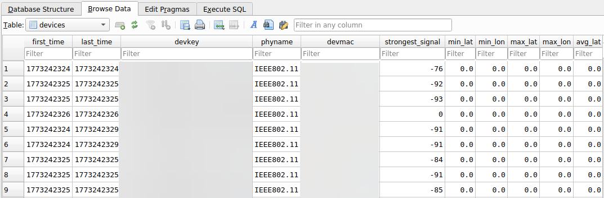
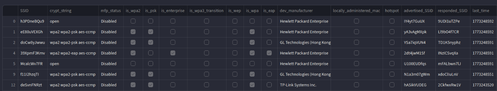
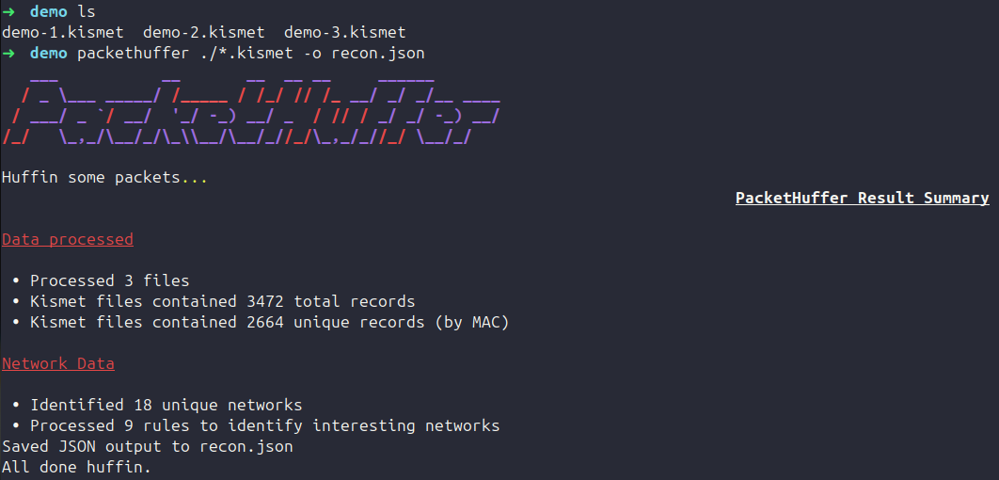
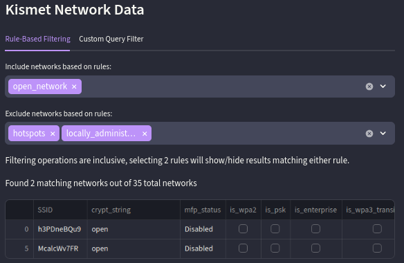
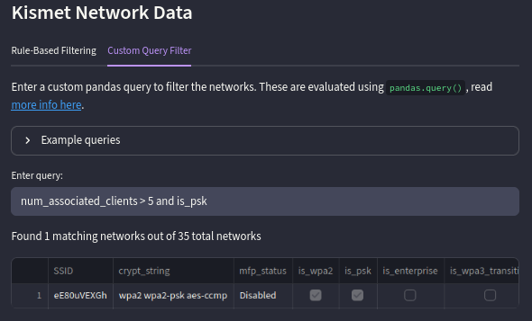
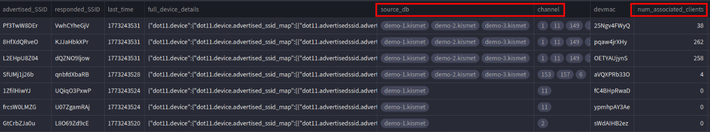

PacketHuffer: Making Sense of Kismet Data
Background⌗
Kismet is a widely-used tool for wireless reconnaissance and other RF information gathering. Wireless reconnaissance, or wardriving, is a key part of wireless engagements during which operators survey the wireless networks and devices in a given area. Kismet is used to easily ingest data from multiple sources (WiFi, BLE, GPS) and identify potentially vulnerable networks and interesting devices.
Kismet provides output in the form of KismetDB .kismet files, which are SQLite databases.

There are limited tools available to easily pull out Access Points (APs) from these files, and things get especially tricky when dealing with large batches of captures. Enter PacketHuffer.
PacketHuffer⌗
The primary motivations of PacketHuffer are to ease the struggle of dealing with multiple Kismet captures, implement out of the box rules/detections for items of interest a-la BloodHound, and add flexibility for the easy viewing and analysis of wireless recon data. PacketHuffer takes information from batches of kismet files, extracts the wireless devices, and provides a de-duplicated/concise view of identified networks. The tool has both a CLI and Web GUI, and allows for JSON and XLSX data exports.

The GUI displays a single record per SSID and aggregates information from all supplied Kismet files. In addition to the data provided by Kismet, PacketHuffer performs analysis to provide columns such as mfp_status and is_enterprise. These columns provide additional insight based on the Kismet data to make querying and filtering the data easier. For example, mfp_status, which indicates whether protected management frames are required for a network in a distinct column, is derived from Kismet’s dot11.advertisedssid.wpa_mfp_required and dot11.advertisedssid.wpa_mfp_supported attributes.

Sample anonymized JSON output:
{
"SSID":
{
"0": "DIKomLAG78",
"1": "af8oiic6bv",
"2": "B10MKwloKl",
},
"crypt_string":
{
"0": "open",
"1": "wpa2 wpa2-eap aes-ccmp",
"2": "open",
},
"mfp_status":
{
"0": "Disabled",
"1": "Disabled",
"2": "Disabled",
},
"is_wpa2":
{
"0": false,
"1": true,
"2": false,
},
"is_psk":
{
"0": false,
"1": false,
"2": false,
},
[SNIPPED]
}
Rules⌗
A main focus of the tool is the ability to use YAML defined rules and custom queries to identify interesting networks, providing operators with an intuitive UI for Kismet data. PacketHuffer rules consist of a condition and guidance. Networks that meet the criteria for a given rule will have information added to the guidance column.
The following rule can be used to identify potential deauth candidates, it identifies WPA-PSK networks without protected management frames.
- name: deauth
condition: "mfp_status == 'Disabled' and is_wpa == True and is_psk == True"
guidance: "WPA(2)-PSK network with management frame protection disabled, potential deauthentication candidate."

and APs with locally administered MAC addresses.
Default Rules⌗
The default PacketHuffer config currently ships with the following rules:
| Name | Logic | Guidance | Note |
|---|---|---|---|
| hidden_networks | advertised_SSID == '' | Hidden network, SSID identified by examining device probes and responses. | PacketHuffer/Kismet will automatically reveal hidden network names by parsing device probes/associations. |
| deauth | mfp_status == ‘Disabled’ and is_wpa == True and is_psk == True | WPA(2)-PSK network with management frame protection disabled, potential deauthentication candidate. | |
| pmkid_candidate | is_wpa == True and is_psk == True | WPA(2)-PSK network, potential PMKID attack candidate. | |
| dragonblood | is_wpa3_transition == True and mfp_status == ‘Disabled’ | Network is in WPA3 transition mode, potential WPA3 downgrade attack candidate (DragonBlood). | |
| wep_encryption | is_wep == True | Network uses WEP encryption, potential candidate for ARP Request Replay Attack. | |
| open_network | crypt_string == ’’ or crypt_string == ’none’ or crypt_string == ‘open’ | Open network with no encryption. | |
| hotspots | hotspot == True | This network’s OUI maps to a hotspot or mobile device vendor. | This is determined based on OUI lookups / vendors |
| locally_administered_mac | locally_administered_mac == True | This network’s MAC is in the range for loclly administered MACs. This may be randomized by a mobile OS/privacy feature. | This flags as true if the 2nd character of the MAC is in a locally administered range |
| evil_twin | is_enterprise == True | Enterprise network with EAP enabled. Check the EAP method(s) in use, potential candidate for evil-twin attacks or relay attacks w/sycophant. | More work will need to be done here to determine if specific guidance can be given based on EAP types |
Custom Queries⌗
In addition to rules, users can filter data using custom queries using Pandas syntax. We can extend the deauth example from above by only identifying networks with connected clients.

with more than 5 connected clients.
This can be used to identify networks based on specific criteria, e.g. a specific string in the SSID, or to test logic for rule creation.
Handling Multiple Captures⌗
Warwalking generally involves the collection of GPS data to locate identified networks, but this isn’t always feasible depending on the site. When performing recon of small sites such as office buildings, GPS data isn’t helpful in pinpointing network locations. To combat this, I wanted a way to view networks found across a series of captures scoped to a specific area (e.g. floor-1.kismet, floor-2.kismet) and identify which files each network was present in.
When PacketHuffer processes multiple captures, data is de-duplicated by device MAC address, PacketHuffer will provide a single row of data for each broadcasted SSID. The source_db column provides a list of capture files each network was identified in.

The row displayed for each SSID will be the record from the last time the network was seen by Kismet. Some columns such as channel, num_connected_clients, and devmac will contain aggregated data from all records.
Closing⌗
It can be difficult to turn wireless recon data into an actionable plan. Using tools like PacketHuffer, you can more easily make sense of Kismet data and identify targets on wireless engagements.
PacketHuffer source code can be found here. Feel free to contribute with additional rules and detection logic.